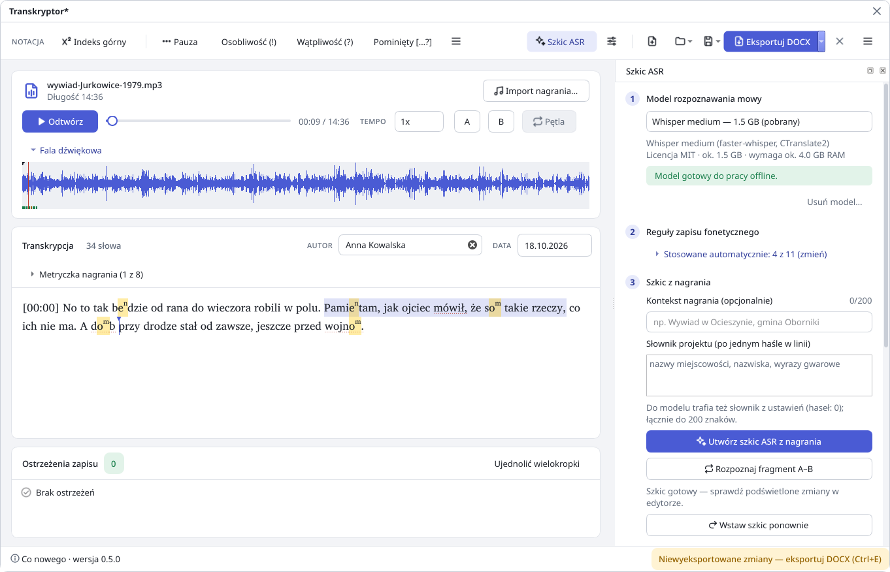
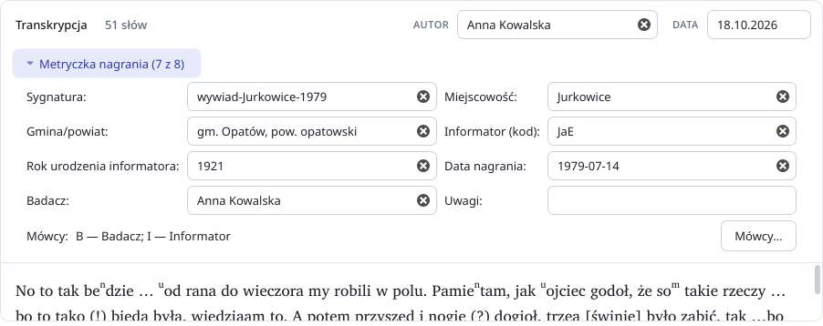

Notacja pod ręką
Indeks górny (beⁿdzie, soᵐ, ᵘojciec),
pauzy, osobliwości (!), wątpliwości
(?) i pominięte fragmenty […?] wstawia
się przyciskiem albo skrótem klawiszowym.
${summary}. Program odtwarza nagranie, podpowiada szkic tekstu z rozpoznawania mowy i pilnuje notacji, a gotową transkrypcję zapisuje w DOCX. Nagrania i tekst nie opuszczają komputera.

Indeks górny (beⁿdzie, soᵐ, ᵘojciec),
pauzy, osobliwości (!), wątpliwości
(?) i pominięte fragmenty […?] wstawia
się przyciskiem albo skrótem klawiszowym.
Model Whisper działa lokalnie, bez Internetu: do wyboru small, medium albo large-v3, na procesorze lub karcie NVIDIA. Kontekst nagrania i słownik pomagają zapisać nazwy miejscowości i nazwiska.
Reguły podpowiadają m.in. nosowość i labializację w szkicu. Każdą zmianę widać w tekście i można ją przyjąć albo odrzucić — decyzja zawsze należy do transkrybenta.
Pętla A–B, zmiana tempa, skoki i auto-cofanie po pauzie — wszystko z klawiatury, bez odrywania rąk od tekstu. Kliknięcie segmentu szkicu odtwarza jego fragment.
Walidator wskazuje usterki notacji (brak odstępu po pauzie, błędny marker pominięcia, niejednolite wielokropki), a lista ostrzeżeń prowadzi prosto do miejsca w tekście.
Sygnatura, miejscowość, informator, data nagrania i badacz trafiają do dokumentu razem z tekstem. Eksport z anonimizacją pomija dane osobowe; import DOCX pozwala wrócić do starszej pracy.
Plik projektu zapamiętuje tekst, metryczkę, szkic ASR i stan przeglądu. Po awarii program proponuje odzyskanie pracy.
Bez konta, telemetrii i chmury. Jedyne połączenia to jednorazowe pobranie modelu (za zgodą) oraz automatyczne sprawdzenie aktualizacji.

Najnowsze wydanie: ${app_name} ${version} (${release_date}) — noty wydania. Program sam powiadamia o kolejnych wersjach.
Starsze wersje są na stronie wszystkich wydań. Python nie musi być zainstalowany — instalator i AppImage zawierają komplet środowiska.
Model ASR (ok. 1,5 GB dla domyślnego medium) pobiera się z programu przy pierwszym użyciu szkicu. Pisanie, odtwarzanie i eksport działają bez modelu i na skromniejszym sprzęcie.
Co zmieniło się w kolejnych wydaniach.